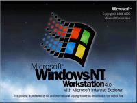

Complete desktops contain all operating system components as well as Internet Explorer and Outlook Express. Where possible, I have tried to include built in file transfer programs (Web Publishing Wizard, Web Folders), useful system tools (System File Checker, System Restore) and certain wizards (Network Setup Wizard, Internet Connection Wizard). As a result, some of the desktops are quite large and can take some time to load. Here are the complete virtual desktops that are currently available:
 |
 |
| Windows 95a with Microsoft Internet Explorer 3 and Internet Mail and News | Windows 95c with Microsoft Internet Explorer 4 and Outlook Express 4 |
 |
|
| Windows 98 with Microsoft Internet Explorer 4 and Outlook Express 4 | Windows 98 SE with Microsoft Internet Explorer 5 and Outlook Express 5 |
|  | |
| Windows ME with Microsoft Internet Explorer 5.5 and Outlook Express 5 | Windows NT4 Workstation with Microsoft Internet Explorer 5.5 and Outlook Express 5 |
| Windows 2000 Pro with Microsoft Internet Explorer 6 and Outlook Express 6 | Windows XP Pro with Microsoft Internet Explorer 6 and Outlook Express 6 |
 |
|
| Windows XP Pro SP2 with Microsoft Internet Explorer 6 SP2 and Outlook Express 6 SP2 | Macintosh OS 8.6 with Microsoft Internet Explorer 4.5 and Outlook Express 4.5 |
| Macintosh OS 9.2 with Microsoft Internet Explorer 5 and Outlook Express 5 | Macintosh OS X 10.2 (Jaguar) with Microsoft Internet Explorer 5.2 and Apple Mail |
 |
|
| Macintosh OS X 10.4 (Tiger) with Safari 2 and Apple Mail 2 | |